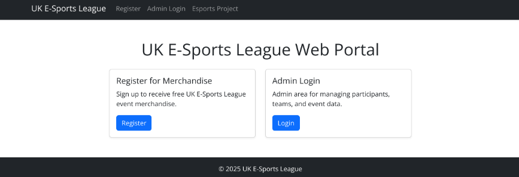

UNIVERSITY PROJECTS
Year 1 Projects.
Building the foundations of Computer Science.
This page showcases the projects and coursework I completed during the first year of my Computer Science degree.
YEAR 1
First Year Projects
During my first year at university, I developed the foundations of my Computer Science knowledge through programming, web development, software development and other areas of computing.
FULL STACK DEVELOPMENT
Full Stack Development Project:
This project involved developing an E-Sports League web application. The project gave me experience working with front-end and back-end development, database interaction and creating a website that could manage information.
HTML, CSS, PHP, SQL and MySQL.
Web development, database management, PHP programming, problem solving and software development.
PROJECT SCREENSHOT
E-Sports League Homepage
The screenshot below shows the homepage of the E-Sports League project that I developed as part of my Full Stack Development coursework.

Project Homepage
This shows the main homepage of the E-Sports League website and the user interface created for the project.
MORE PROJECTS
Other Year 1 Work
More projects and coursework from my first year will be added here as I continue to build my portfolio.